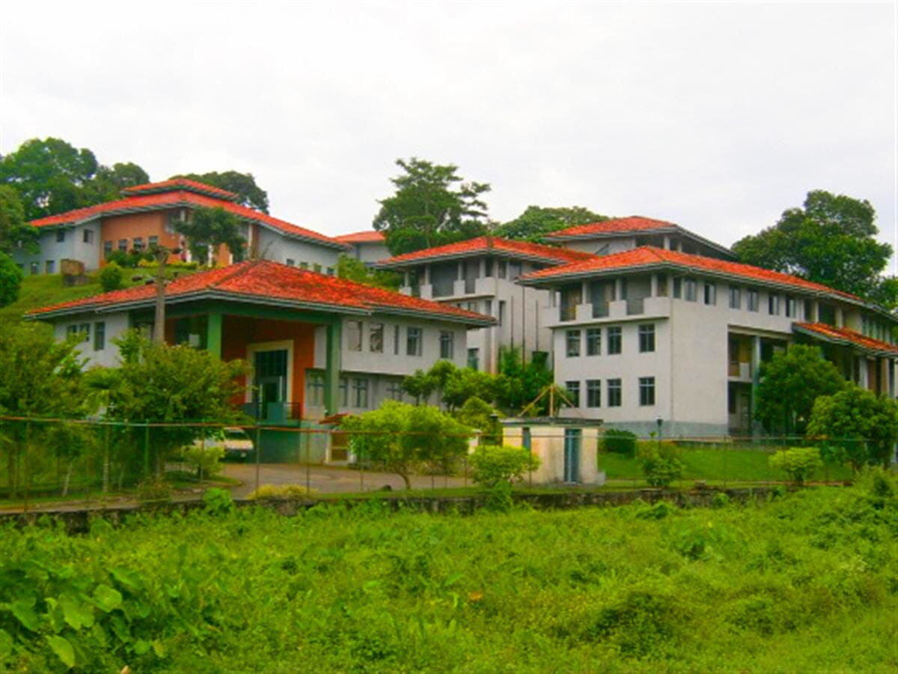
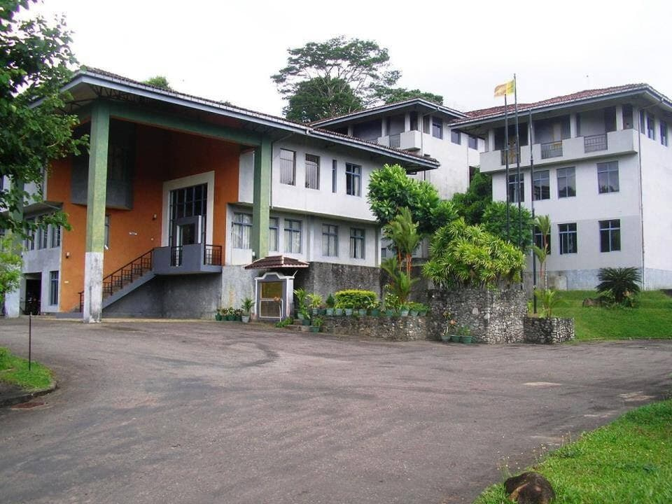
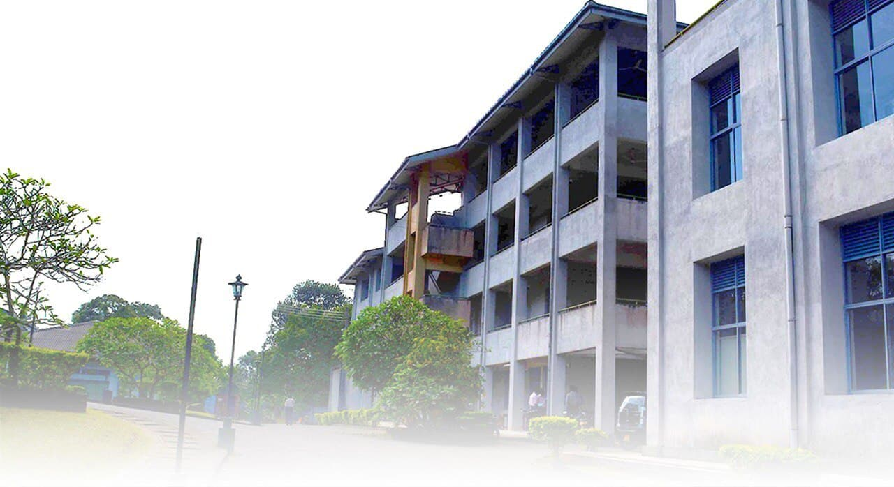

Advanced Technical Education (ATI)
As per the recommendations of the Committee appointed by Prof. Wiswa Waranapala, Deputy Minister of Higher Education in 1994, the Sri Lanka Institute of Advanced Technical Education (SLIATE) was formed in 1995, under the Sri Lanka Institute of Advanced Technical Education Act No. 29 of 1995, In 2001 the name of the institution was amended as Sri Lanka Institute of Advanced Technological Education, (SLIATE). It functions as an autonomous Institute for the management of Higher National and National Diploma courses. The main purposes of establishing SLIATE were to reform and restructure the entire technical and vocational education system in relation to the changing needs of economic development, to meet manpower requirements of national development strategies, and the promotion of privatization, With special concern of meeting the scarcity of trained technological manpower resources at the technician level.
The SLIATE is a statutory body operating under the purview of the Ministry of Higher Education and is one of the leading higher educational institutions in Srilanka.
|  |  |  |